来源：https://vvxlpvbvbp3.feishu.cn/docx/C5CbdXWifo7ahUx3uDccqyxmnre
我是Albert
连续创业者
主攻方向：海外全区域独立站,月消耗20W刀
之前利用五一假期时间,简单的写了一篇关于通过instagram+facebook私域卖货的文章
大体介绍了一遍这个项目的运行逻辑,以及流量来源,和关于B端的一些思考
没有看过的圈友和不清楚项目逻辑的圈友,可以点击下方链接查看
1:小组项目复盘的阶段性总结,取得的战果
2:项目运行中遇到的问题,以及如何解决
3:如何寻找货源
4:如何进行广告投放
5:如何开展B端业务
2,4,5会重点阐述。
我们是从投放小组中抽出了3名人员,来对私域卖货这个项目进行测试
主要的产品是欧美FP手表,其他的产品都是一样的可玩,仅供参考
4月初正式开始,截止到6月底,
总共卖出了50000￥左右
广告费消耗6000￥
采购成本约占销售额的40%
客户转化比6%
平均客单价400￥左右
平均消息对话3￥/一个
部分广告消耗截图：
部分客户登记截图：
需要模板可以留言
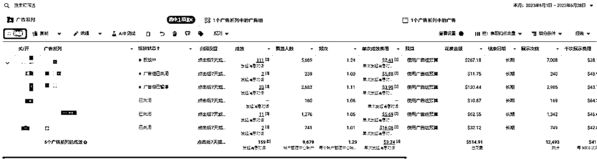
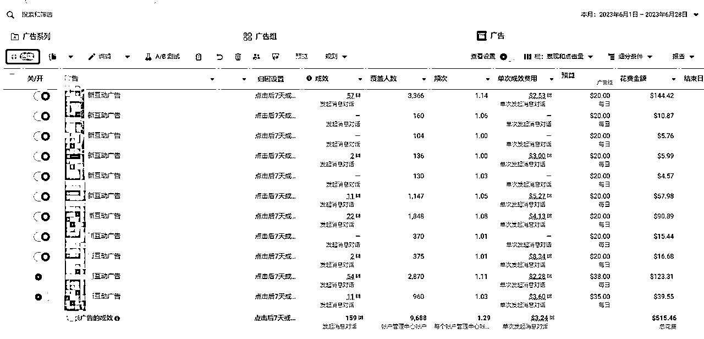
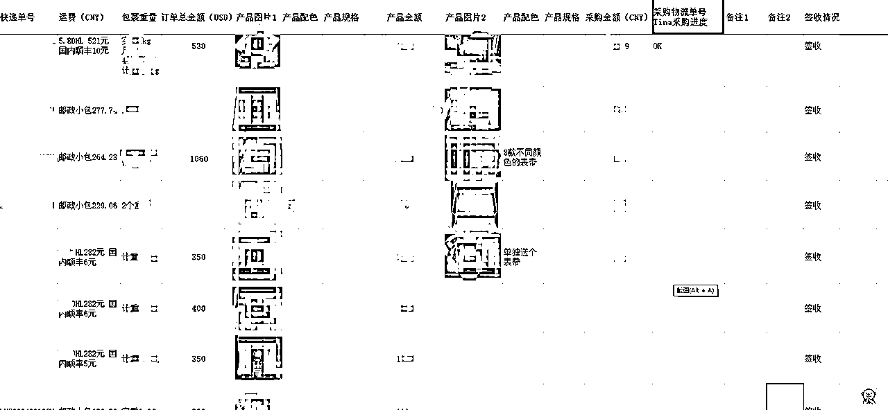
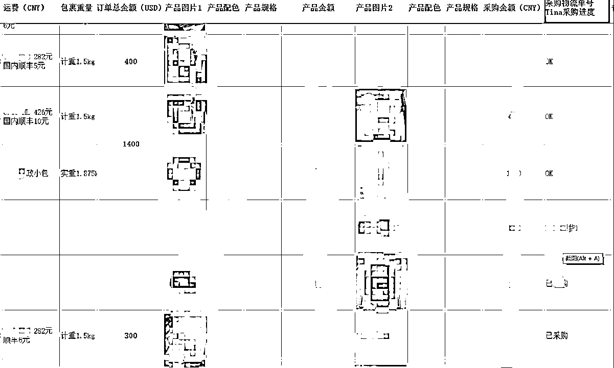
在项目运行过程中,遇到的问题有
1：环境节点问题
2：instagram作品素材问题
3：如何快速出单
解决方法：
采用指纹浏览+独立家庭静态IP解决了IP和环境问题
后期优化跳过了instagram
直接通过Messenger来承接流量
好处就是不用在使用instagram也就不存在挂号的可能,
用户通过广告直接发起消息对话
坏处就是相对来说转化率偏低,客户对于产品的需求,需要花时间寻找对应的图片
使用instagram更新作品
一个新的账户,养好周期大约一周左右,每天保持6个作品的更新,不要附带品牌名称,也不要使用特定的标签以及文案
每个作品配图2-4张即可,需要注意的是发布的时间,需要有时间间隔,广告投放期间,账户保持每天3个作品的更新,持续一周后,可以暂停更新。
成交四步走
大部分客户会咨询广告内容中的产品价格,极少数客户会咨询其他产品
第一步,礼貌问候,不要直接报价,争取和客户多沟通,多可能的发送产品的细节图片
第二步,询问客户使用场景,解决客户的疑虑,比如如何付款,物流周期
第三步,适当的促销,告知在此周期内购买可以获得一定的折扣,可以适当赠送小礼品
第四步,导入WhatsApp,方便后期和客户进一步联络,开展B端业务
以我们的产品为例,可以通过：
共享货源+谷歌关键词搜索寻找同类站点
货比三家,获得最优报价
facebook广告投放,是一个需要长期学习的过程,今天重点讲：
如何广告开户，准备工作,投放逻辑,网站搭建
广告费最低充值/退款/
广告账户如何设置
1：如何开户,准备工作,投放逻辑
市面上大多数是二级代理,或者是三级代理,
我们通过搜索关键词大部分是处于这个类型,
正常我们需要通过公司主体+网站+FB主页联系代理商进行企业户申请
一个公司主体可以申请最多七个广告账户,不同的代理广告账户的名额不一样
一个广告账户,包含三个主页,审核周期一周以内,我们的审核工作日内隔天下户
网站搭建提供域名加服务器时间允许的情况下可以帮大家搭建,基本当天可以完成
正常的卖货站点就可以,大家不用想的太复杂
投放逻辑：FB个人账户+FB企业广告账户,FB个人账户的主要用处是可以建立主页
2：广告费最低充值/退款
市面上的二代,三代,最低起充大约是1000美金,按照当天离岸汇率+0.1手续费,除了代投以外
很少会有要求额外费用,在这里帮助大家避坑,因为我们的消耗还算可以,充值最低500美金
可以降低大家操作的门槛。
退款次月退款,最长等待时间不会超过一个月
3：广告账户如何设置
广告系列：你希望自己的广告获得什么样的目标,私域一般选择“互动”
广告组：流量转化目标,受众,预算,转化目标一般选择：“消息应用”
广告：展示的内容,推荐以视频展示为主
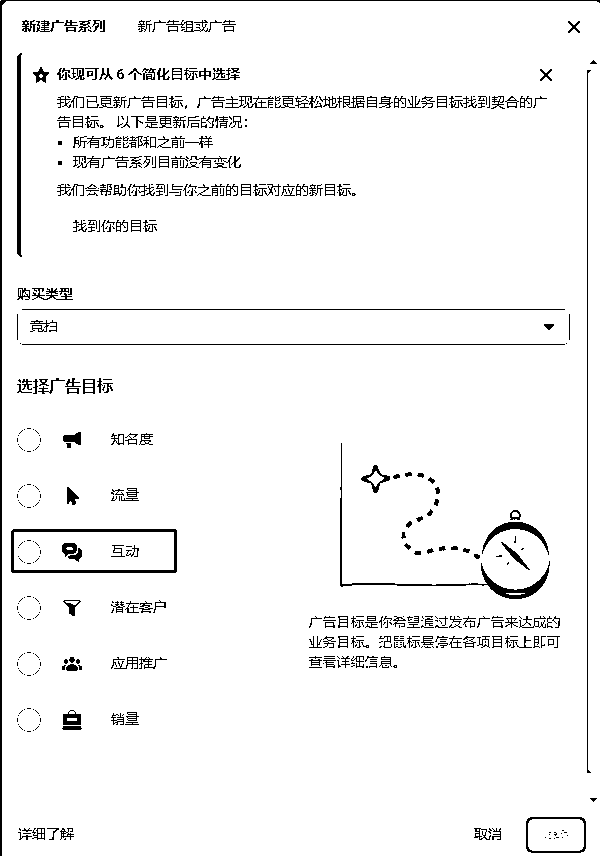
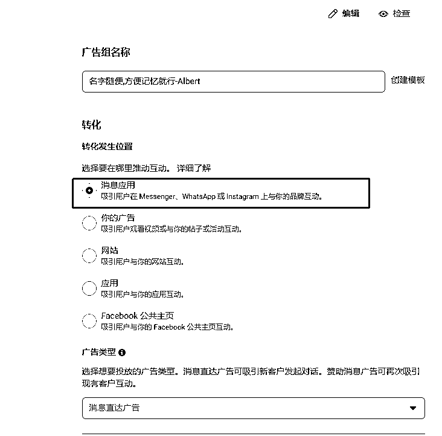
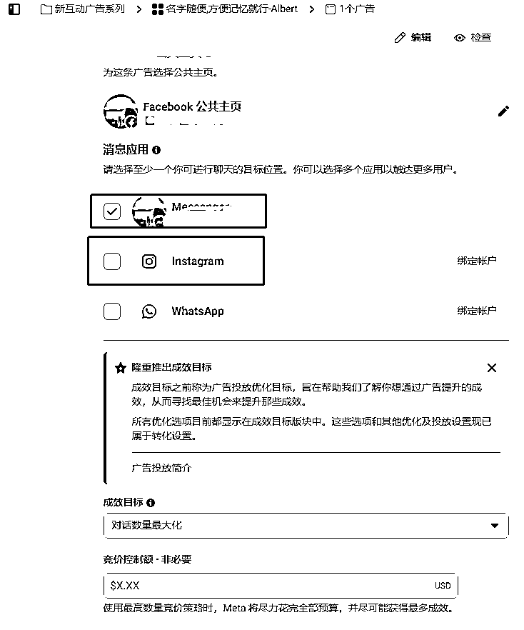
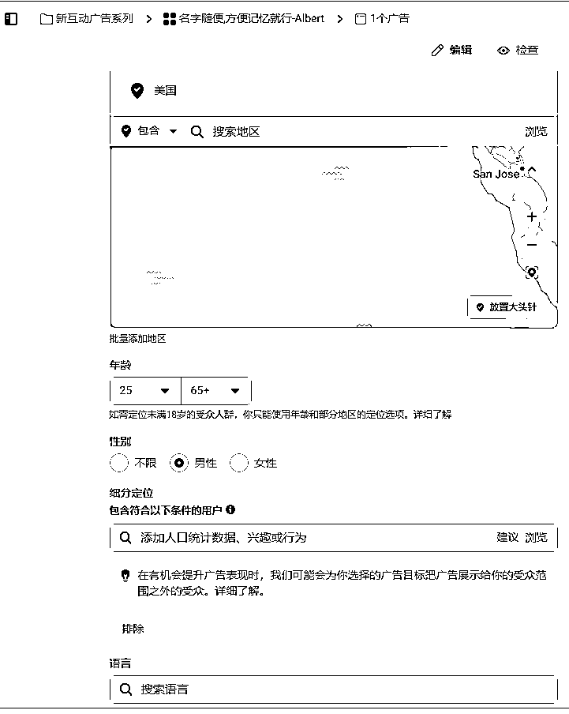
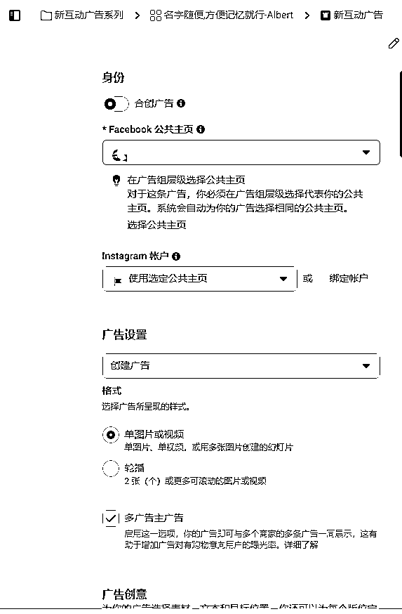
这个项目吸引我的地方就是可以不断的沉淀B端用户,
因为某些原因,除去一些知名电商平台以外,很多客户都曾遭遇过购物欺诈
我今天是以纯小白的角度来讲,有过投放经历的懂的都懂😜
用户的心理是既渴望又害怕,一旦完成第一单的交易
产品的质量有保证的情况下,长期复购是很正常的现象,这里只说一些思路和发展代理的方法
在小组人员和客户沟通的过程中,需要保持自己的底线,我的要求是不低于300￥成交
因为产品特殊性,确实存在了极低价格就能买到的情况,
正是因为这个要求,客户反而会原因来购买,
在客户完成第一单后,可以告知客户我们还同时运营其他产品,
比如鞋子,包,太阳镜,衣服,等等,这些产品大家也是可以去做的,还有其他一些不方便说的😉
在客户第二次购买的时候,我们会给客户准备一些小惊喜,比如送客户一个太阳镜或者首饰,
惊喜感带来了客户对你的信任进一步的提升,日常保持沟通,发展成小B端很简单,
在遇到不信任客户的时候,可以由小B端客户完成成交,从而不断的积累
放一组案例：（如图）
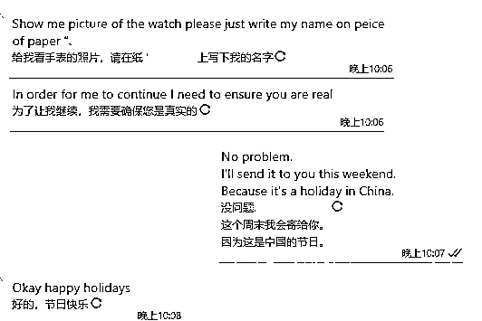
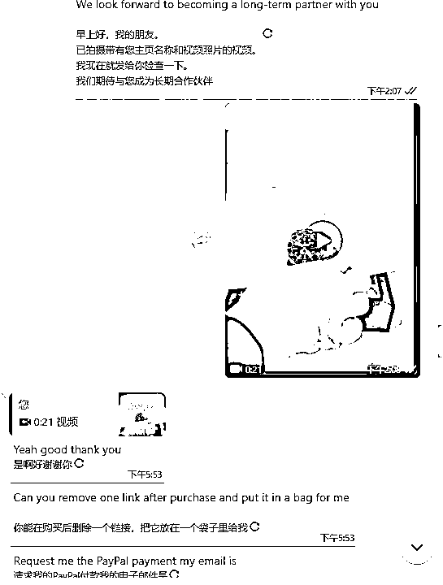
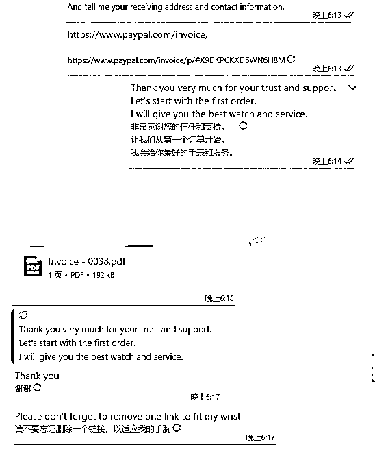
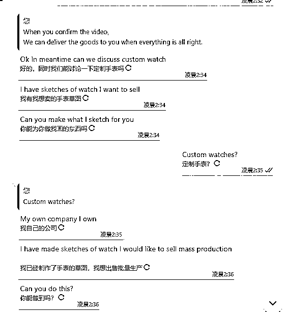
项目本身很简单,投流获客也是最直接的办法,短期内能够拿到结果,沟通过程中,灵活一些,当个长期副业还是不错的选择的,海外私域的市场非常庞大,值得长期去做,文章也仅供参考,欢迎圈友们来交流,相互学习成长,一起生财有术。